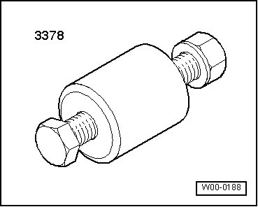
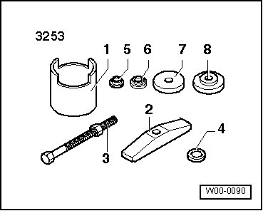
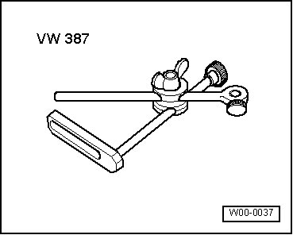
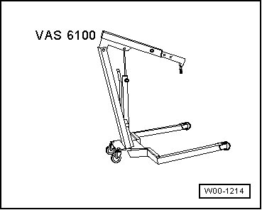
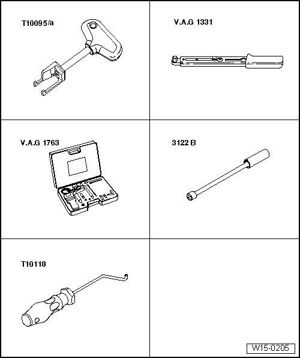
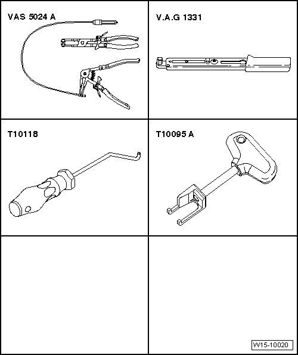
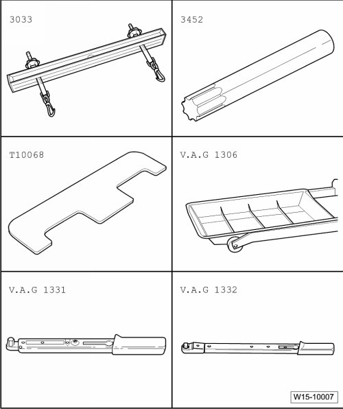
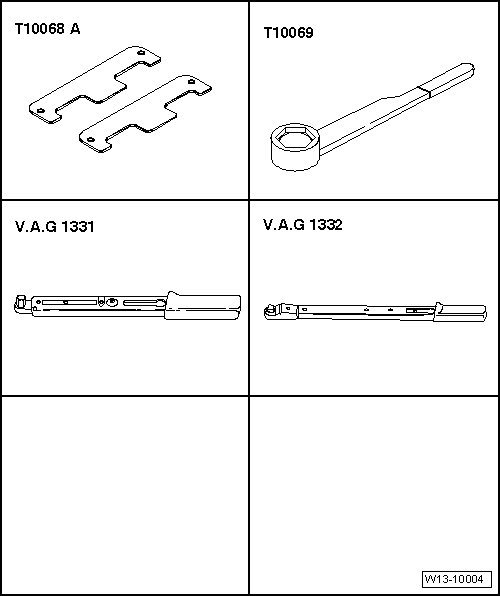
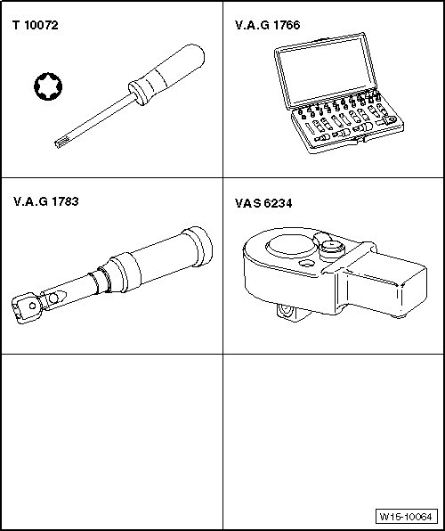
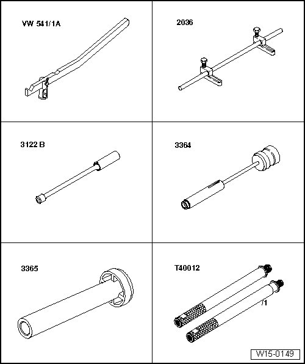

Cylinder Head Assembly: Tools and Equipment
Special Tools
Special tools, testers and auxiliary items required
• Sealant (D 176 501 A1)
• Cable tie
• Dial gauge
• Depth gauge
• Valve seat refacing tool
• Fitting sleeve (3378)

• Fitting sleeve (3253/6) from wheel bearing assembly set (3253)

• Dial gauge holder (VW 387)

• Shop crane (VAS 6100)


Special tools, testers and auxiliary items required
• Puller (T10095A)
• Torque wrench (5 to 50 Nm) (V.A.G 1331)
• Compression tester (V.A.G 1763)
• Spark plug removal tool (3122 B)
• Assembly tool (T10118)

Special tools, testers and auxiliary items required
• Spring-type clip pliers (VAS 5024 A)
• Torque wrench (V.A.G 1331)
• Assembly tool (T10118)
• Puller (T10095 A)

Special tools, testers and auxiliary items required
• Lifting tackle (3033)
• Wrench (3452)
• Camshaft bar (T10068 A)
• Drip tray (V.A.G 1306)
• Torque wrench (5 to 50 Nm) (V.A.G 1331)
• Torque wrench (40 to 200 Nm) (V.A.G 1332)

Special tools, testers and auxiliary items required
• Camshaft bar (T10068 A)
• Counter-holder tool (T10069)
• Torque wrench (5 to 50 Nm) (V.A.G 1331)
• Torque wrench (40 to 200 Nm) (V.A.G 1332)
• Sealant (D 176 501 A1)

Special tools, testers and auxiliary items required
• Torque wrench (V.A.G 1783)
• Torx bit assortment (V.A.G 1766)
• Ratchet 1/4" (VAS 6234)
• Socket Wrench (T10072)

Special tools, testers and auxiliary items required
• Valve lever (VW 541/1 A) with thrust piece (VW 541/6)
• Adjustable rod (2036) with adapter plates (2036/1)
• Spark plug removal tool (3122 B)
• Valve seal removal tool (3364)
• Valve stem seal driver (3365)
• Adapter (T40012/1)